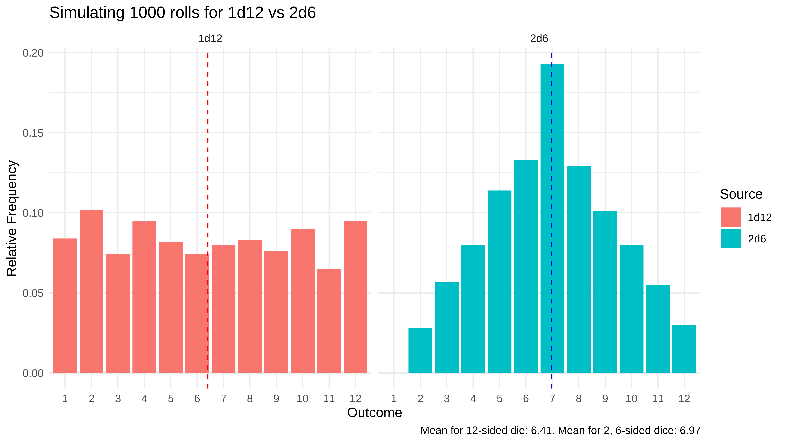

Some friends started playing the new Baldur’s Gate game, a video-game based on Dungeon’s and Dragons. These pen and pencil board games famously use a lot of math and statistics, and keeping track of all the interactions can quickly get dizzying. When attacking a monster in the game, one might use a weapon where the damage dealt is based on the roll of a single die, or multiple dice. It can get complicated when assessing whether damage is even going to be dealt (whether the player swung and missed, or swung and hit), or when there are modifiers like critical misses, hits, or additional bonuses applied, but getting a basic sense of average damage dealt by certain weapons over the course of a game can help players.
Question
A quick question they posed was, which is better: a weapon that deals 1d12 damage (rolling a twelve-sided die, once) or 2d6 (rolling a six-sided die, twice)? We can use R with some simple visualizations and data-generating processes to simulate these scenarios to inform our players.
Data Generation
Twelve-sided die
First, let’s simulate the random roll of a twelve-sided die. It has equal chance of landing on numbers 1-12, and we’ll roll the die 1000 times.
n <-1000d12 <-sample(1:12, n, replace =TRUE)df.1d12 <-as.data.frame(table(d12))
1
The number of times we want to roll our die
2
Using the function sample(), we create a vector with of our random sample, of size n, for possible outcomes provided (numbers 1-6). We set replace to TRUE because we can roll any given number on any subsequent roll - set to false, it would remove an outcome once it has been rolled.
3
Storing our result in a dataframe for plotting later.
Two six-sided dice
Next, let’s simulate the two six-sided dice in a similar fashion:
d6 <-sample(1:6, n, replace =TRUE) +sample(1:6, n, replace =TRUE)df.2d6 <-as.data.frame(table(d6))
Prep for Visualization
We created two dataframes of our generated data, df.1d12 and df.2d6. Let’s add some descriptive names to our outcomes (the numbers rolled) and the frequency of each outcome in the n trials.
Let’s create two, side-by-side histograms to examine the relative frequency of each outcome.
Code
library(ggplot2)title_text <-sprintf("Simulating %.f rolls for 1d12 vs 2d6", n)caption_text <-sprintf("Mean for 12-sided die: %.2f. Mean for 2, 6-sided dice: %.2f", mean(d12), mean(d6))ggplot(combined_df, aes(x = outcome, y = probability, fill = source)) +geom_bar(stat ="identity") +geom_vline(data =subset(combined_df, source =="2d6"), aes(xintercept =mean(d6)), color ="blue", linetype ="dashed")+geom_vline(data =subset(combined_df, source =="1d12"), aes(xintercept =mean(d12)), color ="red", linetype ="dashed")+labs(title = title_text,x ="Outcome",y ="Relative Frequency",fill ="Source",caption = caption_text ) +theme_minimal() +facet_wrap(~ source, ncol=2)

Figure 1: Charts
Based on the above, we can see that the 1d12 has an equal chance of hitting outcomes 1 through 12 (approximately uniformly distributed based on our simulation), while the 2d6 approximately follows a normal distribution. The 1d12 will hit higher and lower numbers more frequently than the 2d6, but because the 2d6 can never have an outcome of 1, it will, on average, deal more damage.
Citation
BibTeX citation:
@online{reyes2023,
author = {Reyes, Matthew and Reyes, Matthew},
title = {Table-Top {Games} and {Probability}},
date = {2023-09-07},
url = {https://blog.mreyes.info/posts/Probability/dice1.html},
langid = {en}
}